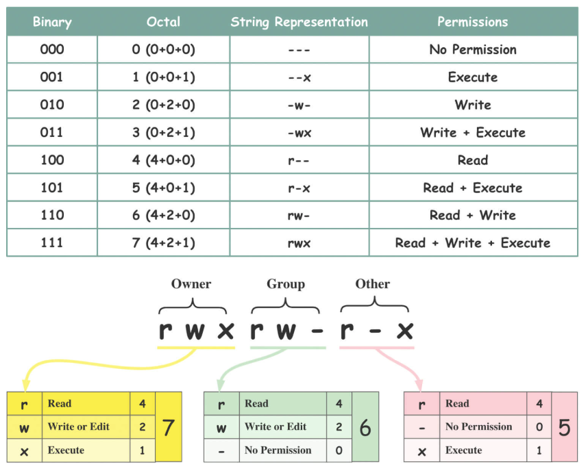
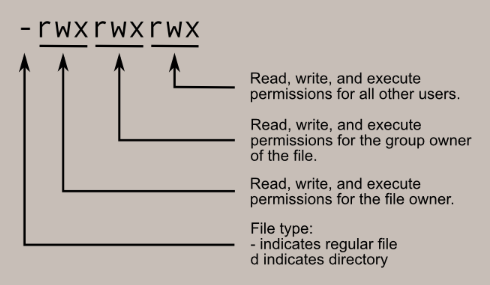
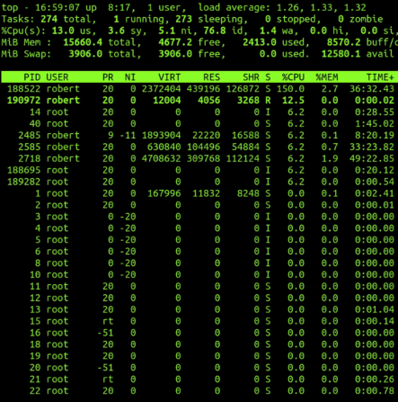
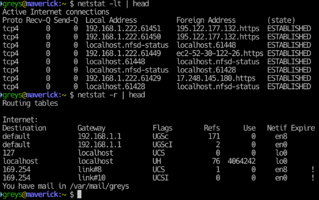

Introduction
Linux is one of the most important foundations for modern DevOps work. Most cloud servers, containers, and automation environments run on Linux. If you are starting your DevOps journey, strong Linux basics will help you deploy faster, debug confidently, and understand production systems at a deeper level.
1. What Is Linux and Why It Is Important in DevOps
Linux is an open-source operating system used to run applications, services, and infrastructure. In DevOps, engineers rely on Linux for scripting, server administration, CI/CD pipelines, and cloud operations.
- Most cloud virtual machines use Linux distributions.
- Container platforms like Docker are Linux-native by design.
- Kubernetes worker nodes commonly run Linux kernels.
- Automation tools and shell scripts are heavily Linux-oriented.
2. Linux File System Structure
Linux uses a single-root directory model starting from /. Understanding standard directories makes troubleshooting much easier in real DevOps environments.
- /etc: System and service configuration files.
- /var: Logs, cache, and changing runtime data.
- /home: User home directories.
- /usr: User-level binaries and libraries.
- /opt: Optional software packages.
- /tmp: Temporary files.
3. Essential Linux Commands
These commands are part of daily DevOps operations for inspection, automation, and diagnostics:
- pwd, ls, cd: Navigate and inspect directories.
- cat, less, tail -f: Read files and stream logs.
- cp, mv, rm, mkdir: Manage files and folders.
- grep, find: Search for text and files quickly.
- df -h, du -sh: Check storage usage.
- ssh, scp: Access and transfer data to remote servers.
4. File Permissions and Ownership
Correct permissions protect systems and services. DevOps engineers frequently adjust permissions for app files, deployment scripts, and service users.
- chmod: Change read, write, execute permissions.
- chown: Change file owner and group.
- ls -l: Inspect permission bits and ownership.
- Apply least privilege so services only get required access.


5. Process Management
In production, you must monitor and control running services. Linux process tools help you detect failures, stop runaway jobs, and keep critical applications healthy.
- ps aux and top: List active processes.
- kill and pkill: Stop problematic processes.
- systemctl status/start/stop/restart: Manage systemd services.
- journalctl: Read service logs for debugging incidents.

6. Networking Basics
DevOps depends on networking knowledge to expose applications, secure ports, and troubleshoot connectivity. You should be comfortable with interfaces, DNS, and firewall checks.
- ip a: Display network interfaces and IP addresses.
- ping: Test reachability.
- curl: Validate HTTP endpoints and APIs.
- ss -tuln: Check listening ports.
- dig/nslookup: Troubleshoot DNS resolution.

7. Why Linux Is Critical in DevOps (Docker, Kubernetes, Cloud)
Linux is the common layer behind modern delivery platforms. Docker containers use Linux kernel features, Kubernetes clusters run Linux-based workloads, and cloud systems rely on Linux instances for scale.
- Docker uses namespaces and cgroups from Linux internals.
- Kubernetes operations often involve Linux-level debugging.
- Cloud automation scripts and CI agents commonly run on Linux.
- Security hardening in production starts with Linux best practices.
Conclusion
Linux is not optional for DevOps; it is a core skill that powers containerization, orchestration, automation, and cloud delivery. Focus on filesystem basics, command-line fluency, permissions, process handling, and networking fundamentals. Once these are solid, your Docker, Kubernetes, and cloud workflows become much easier to understand and manage.
Grow Your Linux DevOps Skills
Practice these fundamentals daily to move faster in Docker, Kubernetes, and cloud workflows.
Back to Blog